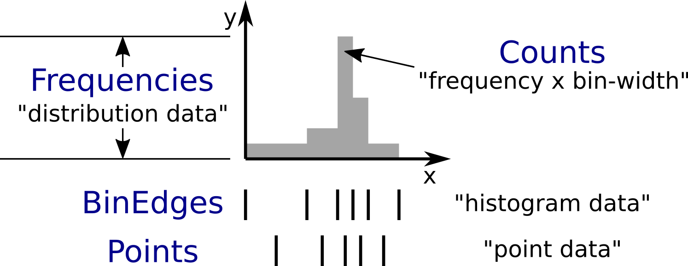

Transition to the HistogramData module#
HistogramData is a new Mantid module dealing with histograms.
This is not a replacement for Histogram1D or ISpectrum, but rather deals with the histogram part of the data stored in those classes.
This document is intended for Mantid developers.
It informs about the transition to the new way of dealing with histograms, and explains the new interfaces.
Introduction#
Motivation#
Make working with histograms easier.
Provide a safer way of working with histograms.
Details can be found in the design document.
Concepts#

The histogram concept and nomenclature in Mantid. The expressions commonly used in Mantid to refer to these concepts are given in quotation marks. Details can be found in the text below. The CamelCase keywords are new types and will be introduced later.#
Histogram data in Mantid is stored in a number of different ways that reflect the way it was produced, or the way algorithms deal with the data:
The x-data (typically corresponding to TOF or units derived from TOF) can represent bin edges (1 more than y-values), or points (1 for each y-value). Conversions between the two cases are done with the algorithms
ConvertToPointDataandConvertToHistogram.The y-data can be counts or counts divided by bin-width. In the latter case a workspace is said to contain distribution data. Conversions between the two cases are done with the algorithms
ConvertToDistributionandConvertFromDistribution.The e-data (uncertainties) follows the same distinction as y-data. It typically stores the standard-deviation, but is sometimes (internally and temporarily) converted to a variance, i.e., the square of the standard-deviation.
The new histogram type described below is designed to follow the needs of the current way Mantid deals with histograms (the following description is mainly for x-data, but the same applies to y-data):
Some algorithms work with bin edges, some with points, and many do not care.
We need to share data, e.g., when the bin edges of all histograms in a workspace are identical. This is currently handled in
ISpectrum,Histogram1D, andEventList, which store a copy-on-write pointer (Kernel::cow_ptr) to astd::vector<double>.
Mantid developers are all familiar with these two facts:
Algorithms that “do not care” access the data and simply work with it. All other algorithms attempt to determine whether the x-data corresponds bin edges or points by comparing its length to that of the y-data (or alternatively use
MatrixWorkspace::isHistogramData()). Based on the result they may convert, e.g., bin edges to points.The copy-on-write mechanism is reflected in the interface of
ISpectrumandMatrixWorkspace:1using MantidVec = std::vector<double>; 2using MantidVecPtr = Kernel::cow_ptr<std::vector<double>>; 3 4// Current ISpectrum interface: 5void setX(const MantidVec &X); 6void setX(const MantidVecPtr &X); 7void setX(const MantidVecPtr::ptr_type &X); 8MantidVec &dataX(); 9const MantidVec &dataX() const; 10const MantidVec &readX() const; 11MantidVecPtr ptrX() const; // renamed to refX() in MatrixWorkspace
Non-
constaccess to data in a spectrum will trigger a copy.To avoid triggering the copy we use
readX().When we want to share data we use
setX()with ashared_ptrorcow_ptr(can be obtained withptrX()orrefX()).
The shortcomings of the current implementation are mostly obvious and can also be found in the design document.
The new Histogram type#
Motivation#
In its final form, we will be able to do things like the following (things not implemented yet are marked with an asterisk (*)):
1BinEdges edges{1.0, 2.0, 4.0, 8.0};
2Counts counts1{4, 100, 4};
3Counts counts2{0, 100, 0};
4Histogram histogram1(edges, counts1);
5Histogram histogram2(edges, counts2);
6// x-data in histogram1 and histogram2 is shared
7
8// Uncertainties are auto-generated, unless specified explicitly
9auto errors = histogram1.countStandardDeviations();
10errors[0]; // 2.0
11errors[1]; // 10.0
12errors[2]; // 2.0
13
14// Arithmetics with histograms (*)
15histogram1 += histogram2; // Checks size, throws if mismatched!
16auto counts = histogram1.counts();
17counts[0]; // 4.0
18counts[1]; // 200.0
19counts[2]; // 4.0
20// Deals with errors as well!
21errors = histogram1.countStandardDeviations();
22errors[0]; // 2.0
23errors[1]; // sqrt(200.0)
24errors[2]; // 2.0
25
26// Need bin centers (point data) instead of bin edges?
27auto points = histogram.points();
28// Need variance instead of standard deviation?
29auto variances = histogram.countVariances();
30// Need frequencies (distribution data) instead of counts?
31auto frequencies = histogram.frequencies();
32auto variances = histogram.frequencyVariances();
33
34// Type-safe operations
35CountStandardDeviations sigmas{0.1, 0.1};
36histogram.setCountVariances(sigmas); // Ok, squares internally
37sigmas += CountVariances{0.01, 0.01}; // Ok, takes sqrt before adding (*)
38sigmas[0]; // 0.2
39sigmas[1]; // 0.2
Further planned features:
Arithmetics will all sub-types (
BinEdges,Points,Counts, andFrequencies, and also their respectiveVariancesandStandardDeviations).Generating bin edges (linear, logarithmic, …).
Extend the
Histograminterface with more common operations.Non-member functions for more complex operations on histograms such as rebinning.
Validation of data, e.g., non-zero bin widths and positivity of uncertainties.
Any feedback on additional capabilities of the new data types is highly appreciated. I will happily consider adding more features as long as they fit the overall design. Please get in contact with me!
Basic changes have been merged (soon after the 3.7 release).
We will then work on reducing the use of the old interface (readX(), dataX(), readY(), …) as much as possible.
After that, more features will follow.
We also want to expose most parts of the HistogramData module to Python, but no schedule has been decided yet.
Parts of the old interface will be kept alive for now, in particular to maintain support for the old Python interface.
Overview#
A new module
HistogramDatahas been added.Histogram1DandEventListnow store their histogram data in the new typeHistogramData::Histogram.The public interface of
ISpectrumandMatrixWorkspacegives access toHistogramand its components, in a fashion similar toreadX(),dataX(), etc.The old
readX()/dataX()interface is still available for the time being, but its use is unsafe (as before) and it should not be used anymore.
MatrixWorkspace thus has a number of new public methods (details follow below):
1class MatrixWorkspace {
2public:
3 // Note return by value (see below)
4 Histogram histogram(const size_t index) const;
5 template <typename... T> void setHistogram(const size_t index, T &&... data) &;
6
7 // Note return by value (see below)
8 BinEdges binEdges(const size_t index) const;
9 Points points(const size_t index) const;
10
11 template <typename... T> void setBinEdges(const size_t index, T &&... data) &;
12 template <typename... T> void setPoints(const size_t index, T &&... data) &;
13
14 // Note return by value (see below)
15 Counts counts(const size_t index) const;
16 CountVariances countVariances(const size_t index) const;
17 CountStandardDeviations countStandardDeviations(const size_t index) const;
18 Frequencies frequencies(const size_t index) const;
19 FrequencyVariances frequencyVariances(const size_t index) const;
20 FrequencyStandardDeviations frequencyStandardDeviations(const size_t index) const;
21
22 template <typename... T> void setCounts(const size_t index, T &&... data) & ;
23 template <typename... T> void setCountVariances(const size_t index, T &&... data) & ;
24 template <typename... T> void setCountStandardDeviations(const size_t index, T &&... data) & ;
25 template <typename... T> void setFrequencies(const size_t index, T &&... data) & ;
26 template <typename... T> void setFrequencyVariances(const size_t index, T &&... data) & ;
27 template <typename... T> void setFrequencyStandardDeviations(const size_t index, T &&... data) & ;
28
29 const HistogramX &x(const size_t index) const;
30 const HistogramY &y(const size_t index) const;
31 const HistogramE &e(const size_t index) const;
32
33 HistogramX &mutableX(const size_t index) &;
34 HistogramY &mutableY(const size_t index) &;
35 HistogramE &mutableE(const size_t index) &;
36
37 Kernel::cow_ptr<HistogramX> sharedX(const size_t index) const;
38 Kernel::cow_ptr<HistogramY> sharedY(const size_t index) const;
39 Kernel::cow_ptr<HistogramE> sharedE(const size_t index) const;
40
41 void setSharedX(const size_t index, const Kernel::cow_ptr<HistogramX> &x) &;
42 void setSharedY(const size_t index, const Kernel::cow_ptr<HistogramY> &y) &;
43 void setSharedE(const size_t index, const Kernel::cow_ptr<HistogramE> &e) &;
44};
Histogram#
Contains copy-on-write pointers (
cow_ptr) to the x-data, y-data, and e-data.Therefore: copying and return-by-value (see
Histogram MatrixWorkspace::histogram(size_t)) is cheap!The interface gives access to the data as well as the pointer:
1class Histogram {
2public:
3 // ...
4 // Replacement for readX() and dataX() const
5 const HistogramX &x() const;
6 const HistogramY &y() const;
7 const HistogramE &e() const;
8 // Replacement for dataX()
9 HistogramX &mutableX() &;
10 HistogramY &mutableY() &;
11 HistogramE &mutableE() &;
12
13 // Replacement for refX()
14 Kernel::cow_ptr<HistogramX> sharedX() const;
15 Kernel::cow_ptr<HistogramY> sharedY() const;
16 Kernel::cow_ptr<HistogramE> sharedE() const;
17 // Replacement for setX()
18 void setSharedX(const Kernel::cow_ptr<HistogramX> &x) &;
19 void setSharedY(const Kernel::cow_ptr<HistogramY> &y) &;
20 void setSharedE(const Kernel::cow_ptr<HistogramE> &e) &;
21};
Note that there is also Dx-data, but it is not widely used and thus omitted from this documentation. The interface for Dx is mostly equivalent to that for E.
HistogramX, HistogramY, and HistogramE#
The current fundamental type for x-data,
std::vector<double>, is replaced byHistogramX.The current fundamental type for y-data,
std::vector<double>, is replaced byHistogramY.The current fundamental type for e-data,
std::vector<double>, is replaced byHistogramE.Internally these are also a
std::vector<double>and the interface is almost identical.However, they do not allow for size modifications, since that could bring a histogram into an inconsistent state, e.g., by resizing the x-data without also resizing the y-data.
BinEdges#
For algorithms that work with bin edges,
Histogramprovides an interface for accessing and modifying the x-data as if it were stored as bin edges:1class Histogram { 2public: 3 // Returns by value! 4 BinEdges binEdges() const; 5 // Accepts any arguments that can be used to construct BinEdges 6 template <typename... T> void setBinEdges(T &&... data) &; 7};
If the histogram stores point data,
Histogram::binEdges()will automatically compute the bin edges from the points.BinEdgescontains acow_ptrtoHistogramX. If the histogram stores bin edges, theBinEdgesobject returned byHistogram::binEdges()references the sameHistogramX, i.e., there is no expensive copy involved.Setting the same
BinEdgesobject on several histograms will share the underlying data.Histogram::setBinEdges()includes a size check and throws if the histogram is incompatible with the size defined by the method arguments.
Points#
For algorithms that work with points,
Histogramprovides an interface for accessing and modifying the x-data as if it were stored as points:1class Histogram { 2public: 3 // Returns by value! 4 Points points() const; 5 // Accepts any arguments that can be used to construct Points 6 template <typename... T> void setPoints(T && ... data) &; 7};
If the histogram stores bin edges,
Histogram::points()will automatically compute the points from the bin edges.Pointscontains acow_ptrtoHistogramX. If the histogram stores points, thePointsobject returned byHistogram::points()references the sameHistogramX, i.e., there is no expensive copy involved.Setting the same
Pointsobject on several histograms will share the underlying data.Histogram::setPoints()includes a size check and throws if the histogram is incompatible with the size defined by the method arguments.
Counts#
For algorithms that work with counts,
Histogramprovides an interface for accessing and modifying the y-data as if it were stored as counts:1class Histogram { 2public: 3 // Returns by value! 4 Counts counts() const; 5 // Accepts any arguments that can be used to construct Counts 6 template <typename... T> void setCounts(T &&... data) &; 7};
Currently the histogram stores counts directly. If this were ever not the case,
Histogram::counts()will automatically compute the counts from the frequencies.Countscontains acow_ptrtoHistogramY. If the histogram stores counts (as in the current implementation), theCountsobject returned byHistogram::counts()references the sameHistogramY, i.e., there is no expensive copy involved.Setting the same
Countsobject on several histograms will share the underlying data.Histogram::setCounts()includes a size check and throws if the histogram is incompatible with the size defined by the method arguments.
Frequencies#
For algorithms that work with frequencies (defined as counts divided by the bin width),
Histogramprovides an interface for accessing and modifying the y-data as if it were stored as frequencies:1class Histogram { 2public: 3 // Returns by value! 4 Frequencies frequencies() const; 5 // Accepts any arguments that can be used to construct Frequencies 6 template <typename... T> void setFrequencies(T &&... data) &; 7};
Currently the histogram stores counts.
Histogram::counts()will automatically compute the frequencies from the counts.Frequenciescontains acow_ptrtoHistogramY.Setting the same
Frequenciesobject on several histograms will not share the underlying data since a conversion is required. This is in contrast toBinEdgesandPointswhere the internal storage mode is changed when setters are used. This is currently not the case forCountsandFrequencies, i.e., y-data is always stored as counts.Histogram::setFrequencies()includes a size check and throws if the histogram is incompatible with the size defined by the method arguments.
CountVariances, CountStandardDeviations, FrequencyVariances, and FrequencyStandardDeviations#
For algorithms that work with counts or frequencies,
Histogramprovides an interface for accessing and modifying the e-data as if it were stored as variances or standard deviations of counts or frequencies:1class Histogram { 2public: 3 // Return by value! 4 CountVariances countVariances() const; 5 CountStandardDeviations countStandardDeviations() const; 6 FrequencyVariances frequencyVariances() const; 7 FrequencyStandardDeviations frequencyStandardDeviations() const; 8 // Accept any arguments that can be used to construct the respectivy object 9 template <typename... T> void setCountVariances(T &&... data) &; 10 template <typename... T> void setCountStandardDeviations(T &&... data) &; 11 template <typename... T> void setFrequencyVariances(T &&... data) &; 12 template <typename... T> void setFrequencyStandardDeviations(T &&... data) &; 13};
Currently the histogram stores the standard deviations of the counts. When accessing the uncertainties via any of the other 3 types the above interface methods,
Histogramwill automatically compute the requested type from the standard deviations of the counts.Each of the 4 types for uncertainties contains a
cow_ptrtoHistogramE. In the current implementation theCountStandardDeviationsobject returned byHistogram::countStandardDeviations()references the sameHistogramEas stored in the histogram, i.e., there is no expensive copy involved.Setting the same
CountStandardDeviationsobject on several histograms will share the underlying data.Setting any of the other 3 uncertantity objects on several histograms will not share the underlying data, since a conversion needs to take place.
All
Histogramsetters for uncertainties includes a size check and throw if the histogram is incompatible with the size defined by the method arguments.
Code examples#
All new classes and functions described here are part of the module HistogramData. The following code examples assume using namespace HistogramData;.
Working with bin edges and counts#
1/////////////////////////////////////////////////////
2// Construct like std::vector<double>:
3/////////////////////////////////////////////////////
4Counts counts(length); // initialized to 0.0
5Counts counts(length, 42.0);
6Counts counts{0.1, 0.2, 0.4, 0.8};
7std::vector<double> data(...);
8Counts counts(data);
9Counts counts(data.begin() + 1, data.end());
10Counts counts(std::move(data));
11
12/////////////////////////////////////////////////////
13// Iterators:
14/////////////////////////////////////////////////////
15BinEdges edges = {1.0, 2.0, 4.0};
16if(edges.cbegin() != edges.cend())
17 *(edges.begin()) += 0.1;
18// Range-based for works thanks to iterators:
19for (auto &edge : edges)
20 edge += 0.1;
21
22/////////////////////////////////////////////////////
23// Index operator:
24/////////////////////////////////////////////////////
25BinEdges edges = {1.0, 2.0, 4.0};
26edges[0]; // 1.0
27edges[1]; // 2.0
28edges[2]; // 4.0
29
30// Only const! This is not possible:
31edges[0] += 0.1; // DOES NOT COMPILE
32
33// REASON: BinEdges contains a copy-on-write pointer to data, dereferencing in
34// tight loop is expensive, so interface prevents things like this:
35for (size_t i = 0; i < edges.size(); ++i)
36 edges[i] += 0.1; // does not compile
37
38// If you need write access via index, use:
39auto x = edges.mutableData(); // works similar to current dataX()
40for (size_t i = 0; i < x.size(); ++i)
41 x[i] += 0.1*i;
42
43// Better (for simple cases):
44edges += 0.1;
Working with points#
1// Works identically to BinEdges
2Points points{0.1, 0.2, 0.4};
3// ...
4
5// Type safe!
6BinEdges edges(...);
7points = edges; // DOES NOT COMPILE
8
9// Can convert
10points = Points(edges); // Points are defined as mid-points between edges
11edges = BinEdges(points); // Note that this is lossy, see ConvertToHistogram
Working with histograms#
1/////////////////////////////////////////////////////
2// Construct Histogram:
3/////////////////////////////////////////////////////
4Histogram histogram(BinEdges{0.1, 0.2, 0.4}, Counts(2, 1000));
5histogram.xMode(); // returns Histogram::XMode::BinEdges
6
7/////////////////////////////////////////////////////
8// Assignment:
9/////////////////////////////////////////////////////
10histogram2 = histogram1; // Data is automatically shared
11
12/////////////////////////////////////////////////////
13// Basic access:
14/////////////////////////////////////////////////////
15auto edges = histogram.binEdges(); // size 3, references Histogram::x()
16auto points = histogram.points(); // size 2, computed on the fly
17points[0]; // 0.15
18points[1]; // 0.3
19const auto &x = histogram.x(); // size 3
20auto &x = histogram.mutableX(); // size 3
21
22/////////////////////////////////////////////////////
23// Modify bin edges:
24/////////////////////////////////////////////////////
25auto edges = histogram.binEdges();
26edges[1] += 0.1;
27histogram.setBinEdges(edges);
28
29/////////////////////////////////////////////////////
30// Outlook (not implemented yet):
31/////////////////////////////////////////////////////
32histogram2 += histogram1; // Checks for compatible x, adds y and e
33
34/////////////////////////////////////////////////////
35// Side remark -- bin edges and points:
36/////////////////////////////////////////////////////
37Histogram histogram(BinEdges{0.1, 0.2, 0.4});
38histogram.xMode(); // returns Histogram::XMode::BinEdges
39auto edges = histogram.binEdges(); // size 3, references Histogram::x()
40auto points = histogram.points(); // size 2, computed on the fly
41// XMode::BinEdges, size 3 is compatible with Points of size 2, so:
42histogram.setPoints(points); // size check passes
43histogram.xMode(); // returns Histogram::XMode::Points
44edges = histogram.binEdges(); // size 3, computed on the fly
45points = histogram.points(); // size 2, references Histogram::x()
46// Note that edges is now different from its initial values (same
47// behavior as ConvertToPointData followed by ConvertToHistogram).
Working with the new MatrixWorkspace interface#
1// Setting Histograms
2outputWS->setHistogram(i, inputWS->histogram(i));
3outputWS->setHistogram(i, eventWS->histogram(i)); // ok, histogram data computed based on events
4outputWS->setHistogram(i, BinEdges{0.1, 0.2, 0.4}, Counts(2, 1000.0));
5eventWS->setHistogram(i, Points{0.1, 0.2, 0.4}); // throws, EventWorkspace needs bin edges
6eventWS->setHistogram(i, BinEdges{0.1, 0.2, 0.4}, Counts(2, 1000.0)); // throws, cannot have Y data
7eventWS->setHistogram(i, BinEdges{0.1, 0.2, 0.4}); // ok
8
9// Setting BinEdges , Counts, ...
10outputWS->setCounts(i, 2, 1000.0);
11outputWS->setCounts(i, data.begin() + 42, data.end());
12
13// Preserve sharing
14outputWS->setSharedY(i, inputWS->sharedY(i));
15outputWS->setCounts(i, inputWS->counts(i)); // also shares, 'Counts' wraps a cow_ptr
16outputWS->setBinEdges(i, inputWS->binEdges(i)); // shares if input storage mode is 'XMode::BinEdges'
Legacy interface#
For compatibility reasons an interface to the internal data, equivalent to the old interface, is still available. Using it is discouraged, since it cannot enforce size checks!
1class Histogram {
2public:
3 MantidVec &dataX();
4 const MantidVec &dataX() const;
5 const MantidVec &readX() const;
6 // Pointer access is slightly modified, holding a HistogramX:
7 void setX(const Kernel::cow_ptr<HistogramX> &X);
8 Kernel::cow_ptr<HistogramX> ptrX() const;
9};
Rollout status#
In principle, Histogram removes the need for conversions between storage types of Y and E data, i.e., the algorithms ConvertToDistribution and ConvertFromDistribution, and manual conversions between standard deviations and variances.
We have not progressed far enough with refactoring to do this.
Just as before the introduction of
Histogram, converting the data and accessing it in the wrong way will create nonsensical results. For example:Converting a workspace with
ConvertToDistributionand then running another algorithm that interpretsreadY()as counts does not make sense.Histogramdoes not yet protect us from that in its current state. RunningConvertToDistributionand then accessing data ascounts()orfrequencies()will not convert correctly, since theHistogramdoes not know that an external conversion algorithm has been run on its data.
It is essential to fix this as a next step, there are two options:
Option A: Remove all such conversions from Mantid, if data is required as one type or another use
counts()orfrequencies().Option B: Make changing the storage type of Y and E data in
Histogrampossible. This implies that we cannot useHistogram::y()in algorithms that requireCounts, since this is not guaranteed anymore.
Storing the uncertainties as standard deviations vs. storing them as variances suffers from a very similar problem.
Both options have shortcomings and I have currently not made up my mind about the best solution.
In any case this will be a major change and is thus not part of the initial introduction of the HistogramData module.
I would be happy about feedback or other ideas.
Dealing with problems#
There are two issues you might encounter when implementing new algorithms or when running existing scripts that are not part of our automated testing:
Exceptions to due size mismatch. The
Histogramtype validates the size of X, Y, and E data in (non-legacy) setters. The best solution is to determine the correct size at creation time of the workspace. Alternatively, you can simply set a new histogram with different size viaMatrixWorkspace::setHistogram()(not yet available in Python).Exceptions about the storage mode of the X data,
Histogram::Xmode. This happens rarely, typically by creating a workspace that contains histogram data (bin edges) and modifying the size via the legacy interface to store point data (or vice versa). These size modifications are only possible via the legacy interface. The best solution is to determine the storage mode at creation time of the workspace, by specifying the correct length of the X data. If that is not possible, use the new setters such assetBinEdges(), they will trigger a conversion of the internal storage mode (not yet available in Python).
Category: Concepts